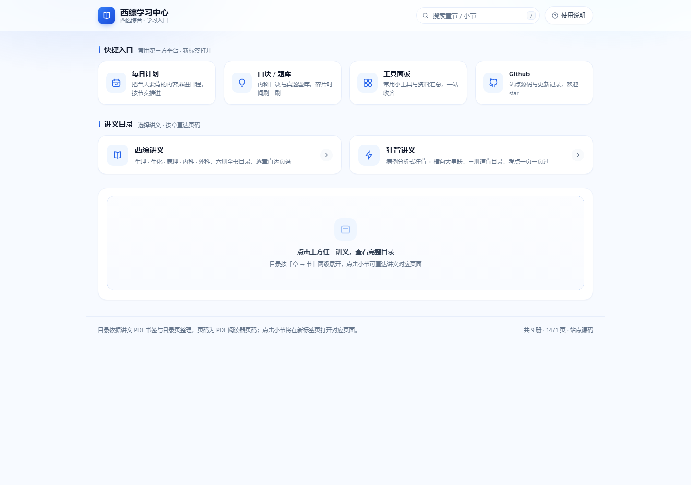
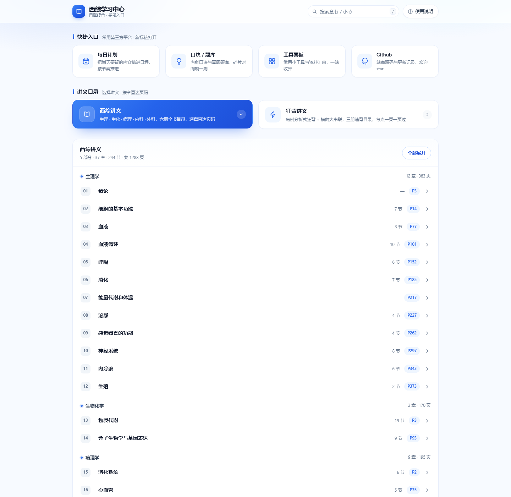
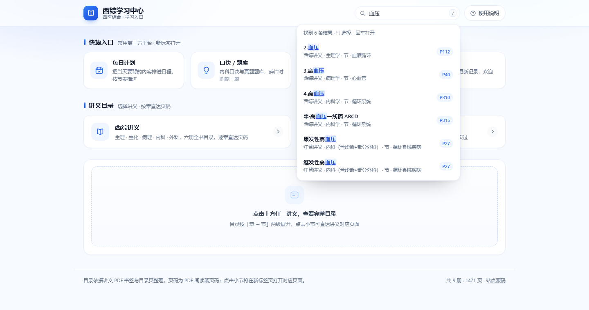
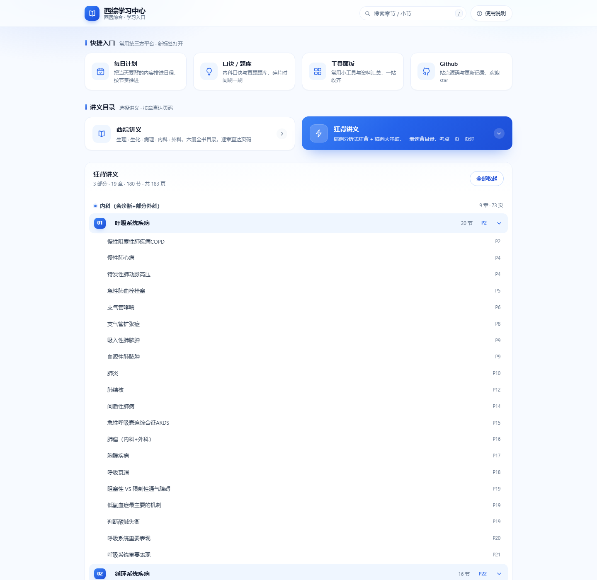
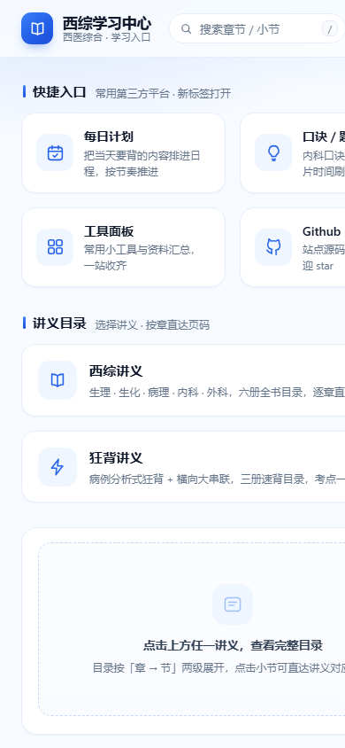
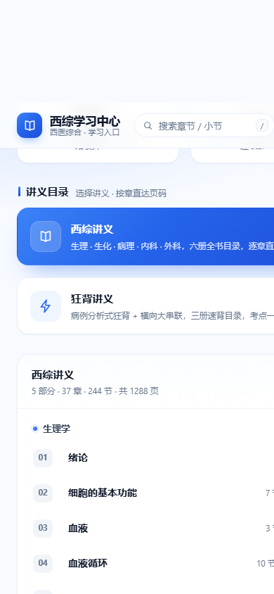

Overview & Positioning
概述与定位
这是一个为西医综合考研复习场景设计的轻量入口页，不是一个完整的学习平台。它只做三件事：把常用平台集中起来、把两套讲义目录结构化、把“某一节在第几页”变成一次点击。页面没有登录、没有服务端，也不需要构建。
面向谁
面向正在备考西医综合（306）的考研人群，尤其是用手机或平板做碎片化复习、需要频繁在“计划 / 题库 / 工具 / 讲义”之间切换的人。使用场景通常很短：打开页面，点一个入口，或者找到某一章某一节，跳到 PDF。
解决什么问题
- 入口分散：把每日计划、口诀题库、工具面板、GitHub 四个常用去处固定在首屏，不必翻聊天记录或收藏夹。
- PDF 书签不好用：把 9 册 PDF 的书签重排成“部分 → 章 → 节”的统一目录，支持单章展开与全部展开。
- 页码查找成本高：每个小节生成「该页所在 PDF 分块 +
#page=」的直达链接，新标签打开即定位到对应阅读器页码。 - 分享复习位置麻烦：支持
?lecture=xizong深链接，把“打开哪套讲义”预先写进 URL，必要时加&all=1直接全展开。
不做什么
页面不承载题库、不做账号体系、不记录学习进度，也不重新排版 PDF 内容。第三方平台负责它们各自的功能；本站只负责“入口”和“目录索引”，因此保持单页、静态、低维护成本。
数据口径：西综讲义为 5 部分 · 37 章 · 244 节 · 1288 页，对应生理、生化、病理、内科、外科共 6 个 PDF；狂背讲义为 3 部分 · 19 章 · 180 节 · 183 页，对应 3 个 PDF。合计 8 部分、56 章、424 节、1471 页、9 个 PDF。
入口优先
首屏先给高频去处，再给目录；不需要先理解站点结构。
状态可见
选中、展开、悬停都用蓝色系反馈，用户始终知道自己在哪一层。
轻量可维护
单页静态实现，目录数据与展示分离，改数据即可更新内容。
Information Architecture
信息架构图
页面只有一条纵向主轴：顶部品牌栏 → 第三方链接直达区 → 讲义主体区。前两层是“离开本站去别处”的入口，第三层才是站内真正的内容区；讲义选择与目录面板在第三层内左右衔接，形成“选讲义 → 展开章 → 点小节”的单一路径。
结构规则：第三层内部只有两个动作——选讲义、展开目录；不存在侧边栏、二级路由或独立详情页。深链接只负责“预先选中某套讲义”，不改变这条主轴。
Color System
色彩规范
以白色卡片承载内容，以浅蓝页面底区分层级，以主蓝承担“可点击 / 已选中 / 已展开”的语义。蓝色不铺大面积正文，只做强调；这样在长时间阅读目录时不会产生疲劳，也能让状态变化足够明确。
主操作、选中态、链接、页码强调、图标主色。
渐变终点、悬停文字、按钮文字、深色强调。
图标底色、选中背景、标签、悬停高亮。
标题、正文、章节名；对白底约 17:1。
说明文字、页码、元信息；对白底约 4.76:1。
卡片边界、分隔线、输入与面板描边。
页面背景、章节行悬停、浅色分区。
标题与正文使用近黑蓝，白底阅读清晰。远高于 WCAG AA 对普通文本 4.5:1 的最低要求。
WCAG AA 通过用于 12px 说明、页码与元信息。刚高于 4.5:1 的 AA 门槛，因此不再叠加透明度，也不用于长段落正文。
WCAG AA 通过linear-gradient(135deg, #3B82F6 0%, #2563EB 42%, #1D4ED8 100%)。仅用于品牌标识、讲义选中卡等小面积强调，正文与大面积背景不使用渐变。
用色策略：页面以 #FFFFFF / #F7FAFF 为底，约占视觉面积七成；#EFF6FF 与 #E7EEFB 负责分区和边界；#2563EB 只出现在需要在 0.2 秒内被注意到的位置。深蓝 #1D4ED8 主要出现在渐变末端和悬停文字，避免与主蓝抢层级。
Typography
字体与排版
全站使用系统字体栈，不加载任何 Web Font：在中英文混排、数字页码密集的目录场景里，系统字体能保证首屏速度与离线可用性。字号层级克制在 16.5px 到 11px 之间，靠字重、颜色与留白建立层级，而不是靠巨大的标题。
字体栈
font-family:
-apple-system, BlinkMacSystemFont, "Segoe UI",
"PingFang SC", "Hiragino Sans GB", "Microsoft YaHei",
"Source Han Sans SC", "Noto Sans CJK SC", sans-serif;
优先使用各平台的系统 UI 字体：macOS / iOS 落在 PingFang SC，Windows 落在 Microsoft YaHei，Android 落在 Noto Sans CJK SC。英文、数字与标点回退到 Segoe UI 或 SF，保证页码和统计数字的清晰度。
数字与中文
页码、章数、节数使用 font-variant-numeric: tabular-nums，让目录中的 P12、P128 等页码纵向对齐。中文标题允许 overflow-wrap: anywhere，避免长章节名在窄屏溢出；正文不做两端对齐，保持自然的左对齐节奏。
字号层级
| 用途 | 字号 / 字重 | 行高 | 典型颜色 | 实现与说明 |
|---|---|---|---|---|
| 站名 | 16.5px / 700 | 1.25 | #0F172A | .brand-name，手机端降为 15.5px；副标题 11px。 |
| 区块标题 | 15px / 700 | 1.6 | #0F172A | .sec-head h2，左侧 3px 蓝色渐变竖条。 |
| 讲义名 | 15px / 700 | 1.6 | 当前色 | .lec-name；选中后继承白色，描述降为 84% 白。 |
| 正文 / 章名 | 14px / 400–600 | 1.6 | #0F172A | body 基准 14px；.ch-title 用 600 字重区分。 |
| 小节名 | 13px / 400 | 1.6 | #334155 | .sec-item；悬停转深蓝 #1D4ED8，手机端 12.5px。 |
| 辅助说明 | 12px / 400 | 1.6 | #64748B | 目录元信息、卡片描述、页脚；浅色场景用 #66768C。 |
| 页码徽标 | 11.5px / 600 | 1.6 | #2563EB | .ch-page 浅蓝底；.sec-page 默认 #64748B。 |
| 按钮文字 | 12.5px / 600 | 1.6 | #1D4ED8 | 使用说明、全部展开 / 收起；手机端保持不换行。 |
间距与圆角
排版原则：全局 line-height: 1.6 给目录与说明文字留出呼吸感；品牌名收窄到 1.25 以保持标志性紧凑。标题不追求超大字号，而用字重、蓝色前缀和上下留白建立层级，避免在手机端挤压首屏。
Component States
组件状态说明
所有交互反馈都收敛在两类信号里：位置变化（上移 3px）与蓝色深浅变化（浅蓝底 → 蓝渐变 → 白字）。下表覆盖快捷入口卡、讲义卡、章节行、小节行、空状态与全部展开 / 收起按钮的全部可见状态。
| 组件 | 状态 | 视觉变化 | 实现要点 |
|---|---|---|---|
| 快捷入口卡.link-card | 默认 | 白卡、1px #E7EEFB 边框、16px 圆角、42px 浅蓝图标、轻阴影；描述 12px 辅助色。 | .link-card 使用 --radius-card 与 --shadow-xs；图标 42×42、圆角 12px。 |
| 悬停 | 整体上移 3px，边框转 #BFD7FE，阴影加强；图标变蓝色渐变、图标转白，描述转 #475569。 | .link-card:hover 的 translateY(-3px)；图标背景 linear-gradient(140deg,#3B82F6,#1D4ED8)，过渡 0.22s。 |
|
| 按下 | 上移量收回到 1px，形成轻微的“按下”反馈。 | .link-card:active { transform: translateY(-1px); } |
|
| 顶栏搜索.search | 默认 | 258px 胶囊输入框，白底 1px #E7EEFB 边框，左侧放大镜 #94A3B8，右侧 / 快捷键提示。 |
.search-input 圆角 999px、高 34px；手机端宽度自适应并隐藏 / 提示与帮助按钮文字。 |
| 聚焦 | 边框转 #BFD7FE，外圈 3px 主蓝 12% 光晕，放大镜转主蓝，/ 提示淡出。 |
.search-input:focus 的 box-shadow；.search:focus-within 同时改图标与 .search-kbd 透明度。 |
|
| 输入中 | 下拉面板 400px / 圆角 14px / 最大 62vh；结果项为「标题 + 讲义 · 科目 · 章 + P 页码胶囊」，命中词浅蓝高亮；无结果时显示空提示。 | 结果来自 window.TOC_DATA 的扁平索引，含「章」与「节」；↑↓ 移动、Enter 打开第一条、Esc 关闭、/ 聚焦，点击结果打开对应 PDF 分块。 |
|
| 讲义卡.lec-card | 默认 | 白卡、44px 浅蓝图标、右侧 26px 圆形箭头；按钮本身无边框，靠卡片边界识别。 | .lec-card 是 button，初始 aria-expanded="false"，右侧箭头 26×26。 |
| 悬停 | 上移 3px，边框转 #BFD7FE、阴影加强；图标底色从 #EFF6FF 变为 #DBEAFE。 | .lec-card:hover；图标 .lec-icon 过渡 0.24s。 |
|
| 选中 | 蓝色渐变底 + 白字；箭头旋转 90deg；图标变 18% 白底；阴影加深并上移 1px。 | .lec-card.is-selected；渐变 135deg；.lec-arrow { transform: rotate(90deg); }；aria-expanded="true"。 |
|
| 再次点击取消 | 选中样式全部移除，目录头部隐藏，目录区恢复为虚线空状态。 | state.lecture === id 时调用 clearLecture()：移除 is-selected、隐藏 tocHead、还原 EMPTY_HTML。 |
|
| 章节行.ch-row | 默认 | 透明底；编号为浅灰底蓝灰字；右侧“N 节”与蓝色 P 页码徽标；箭头朝右。 | .ch-row 为 5 列 grid（序号 / 标题 / 节数 / 页码 / 箭头）；aria-expanded="false"。 |
| 悬停 | 整行底色转为 #F7FAFF，页码徽标加深为 #DFEBFE。 | .ch-row:hover；页码徽标 .ch-page 同步过渡。 |
|
| 展开 | 行底色 #EFF6FF；序号变蓝渐变、白字；箭头旋转 90deg；下方小节列表高度展开。 | .chapter.is-open > .ch-row；.ch-no 蓝渐变；aria-expanded="true"，sec-list 高度从 0 动画到 auto。 |
|
| 小节行.sec-item | 默认 | 13px 蓝灰字；页码 11.5px #64748B；左侧预留 3px 竖线位置但透明。 | 原生 a，href 指向 pdf/xxx.pdf#page=N；target="_blank" 与 rel="noopener noreferrer"。 |
| 悬停 | 浅蓝底、深蓝字；左侧 3px 蓝色竖线显现；页码同步变主蓝。 | .sec-item:hover + ::before；竖线 scaleY(.4) → scaleY(1)，过渡 0.16s。 |
|
| 空状态.toc-empty | 未选讲义 | 1.5px 虚线框、浅蓝渐变底、46px 浅蓝图标；标题 13.5px / 600，提示 12px 辅助色。 | 初始 HTML 被保存为 EMPTY_HTML；取消选择时整体还原。提示文案为“点击上方任一讲义，查看完整目录”。 |
| 全部展开 / 收起.btn-toggle | 默认 | 白底胶囊、1px #BFD7FE 边框、深蓝 12.5px 文字；初始文案“全部展开”。 | .btn-toggle；white-space: nowrap；无章节时随 tocHead 一起 hidden，不显示禁用态。 |
| 悬停 / 按下 | 悬停转 #EFF6FF 底、边框加深并带轻阴影；按下缩放到 0.98。 | .btn-toggle:hover / :active；过渡 0.18s。 |
|
| 全部展开后 | 文案切换为“全部收起”，aria-expanded="true"；所有章节行同时呈展开态。 |
syncToggleAll() 检查 every(aria-expanded === "true")；按钮点击后对全部行调用 setChapterOpen()。 |
.sec-list，而是显示 .sec-empty 提示“本章未细分小节，直接打开第 N 页”，其中 N 链接到 该章 file#page=chapter.page。该分支在数据里对应 sections: [] 的章节，例如生理学“绪论”。
颜色、边框、阴影与位移的通用过渡。
小节列表 height 动画，结束后置为 auto。
切换讲义时目录淡入并上移 10px。
统一缓动，快出慢收，避免弹跳。
卡片悬停上移；选中卡只上移 1px。
prefers-reduced-motion 下关闭动效。
Interaction · Responsive · Accessibility
交互说明、响应式与可访问性
所有交互都发生在同一页，没有路由跳转：选择讲义只重绘目录区，展开章节只改变当前行与小节列表，点击小节才离开本站。下面的流程、断点与截图共同描述这套单页体验的边界。
主交互流程
选择讲义
点击“西综讲义”或“狂背讲义”。卡片进入 is-selected，目录头部显示名称与“部分 · 章 · 节 · 页”统计，目录区以 0.32s 淡入上移动画重绘。若面板顶部低于视口 58%，平滑滚动到面板。
展开 / 收起章节
点击章节行，aria-expanded 与 .chapter.is-open 同步切换；小节列表高度从 0 动画到 scrollHeight，动画结束后置为 auto，再次点击反向收起。
点击小节直达 PDF
小节是原生链接，href 为 pdf/chunks/分块名-序号-哈希.pdf#page=块内页码，target="_blank" 打开新标签，阅读器定位到对应页。大 PDF 已按页切成约 5 MB 的分块，首次只下载当前这一块，打开过的分块会被浏览器缓存；页码以 PDF 阅读器为准，不是印刷页码。
全部展开 / 收起
按钮根据所有章节的 aria-expanded 判断当前是否全开：未全开则一次展开全部并改为“全部收起”，已全开则一次收起。
再次点击当前讲义
已选中的讲义卡再次点击会取消选择：移除蓝色渐变、隐藏目录头、恢复初始空状态，并通过 live region 播报“已收起目录”。
使用说明弹层
顶部“使用说明”打开原生 dialog，点击关闭按钮、点击遮罩或按 Esc 关闭；浏览器不支持 showModal() 时自动隐藏该按钮。
顶栏搜索
在顶栏输入关键词即可同时检索「章」与「节」，结果按命中位置排序并显示所属讲义 / 科目 / 章；点击或回车直接打开对应 PDF 分块页码。支持 / 聚焦、↑↓ 选择、Esc 关闭，以及 ?q=关键词 深链接。
滚动策略：选择讲义后不强制滚动。只有目录面板顶部已经落到视口 58% 以下时才调用 scrollIntoView({behavior:"smooth", block:"start"})，避免用户刚点完卡片就被“抢走”页面位置。目录面板还设置了 scroll-margin-top: 84px，防止吸顶品牌栏遮住标题。
深链接参数
# 打开西综讲义目录 index.html?lecture=xizong # 打开狂背讲义，并直接展开全部章节 index.html?lecture=kuangbei&all=1
?lecture=xizong
按 lectures 的 id 预选讲义；id 不存在时静默忽略，页面保持初始空状态。
?all=1
仅在 lecture 有效时生效，随后把所有章节设为展开。单独使用不会触发展开。
响应式断点
桌面端
- 快捷入口 4 列，讲义卡 2 列。
- 章节行完整显示：序号、标题、N 节、页码、箭头。
- 品牌栏高 64px；内容最大宽度 1080px。
平板 / 窄屏
- 快捷入口降为 2 列；讲义卡改为单列。
- 入口图标、卡片内边距保持桌面尺寸，触控目标不缩小。
- 目录结构不变，仍展示节数与页码。
手机端
- 快捷入口、讲义卡全部单列；品牌栏降到 58px，隐藏副标题。
- 章节行隐藏“N 节”（
.ch-count），保留标题与页码。 - 目录头部改为可换行，按钮靠右；小节缩进收窄到 14px。
样式表使用 @media (max-width: 860px) 与 @media (max-width: 520px) 两个断点。因此 860px 本身进入平板规则，861px 起才是四列 / 两列的桌面布局；520px 本身进入手机规则。
界面截图
桌面端




移动端


可访问性说明
键盘可聚焦
讲义卡与章节行都是原生 button，小节是原生 a，Tab / Shift+Tab 顺序与视觉顺序一致，Enter / Space 可直接触发。底部还提供“跳到主要内容”的 skip link。
aria-expanded 同步
讲义卡和章节行都维护 aria-expanded：选中讲义时对应卡为 true，展开章节时该行为 true；取消选择或收起时同步回到 false，避免视觉状态与读屏状态不一致。
aria-controls 与 aria-hidden
讲义卡通过 aria-controls="tocBody" 关联目录容器；章节行通过 aria-controls="sec-..." 关联自身小节列表，列表的 aria-hidden 随展开状态切换。
屏幕阅读器播报
隐藏的 #liveRegion 使用 role="status" 与 aria-live="polite"，在选择讲义和取消选择时播报“已展开……共 N 章、N 节”或“已收起目录”。
外链安全与新标签
所有第三方入口与小节 PDF 链接都带 target="_blank" 与 rel="noopener noreferrer"，既保留当前页，也避免新页面通过 window.opener 反向控制本页。
焦点与弹层
全局 :focus-visible 使用 2px 主蓝轮廓、2px 偏移。使用说明采用原生 dialog，带 aria-haspopup="dialog"、aria-controls 与关闭按钮的可读标签；Esc 为浏览器原生行为。
对比度与动效偏好
正文对白底约 17:1，辅助文字约 4.76:1，均满足 WCAG AA。开启 prefers-reduced-motion: reduce 时，动画与过渡被压缩到 0.001ms，目录仍可直接使用。
页码口径：PDF 阅读器页码
目录中的 P 数字与 #page= 参数均指 PDF 阅读器页码，不是纸书印刷页码，也不保证与教材页码一致。页脚已明确提示这一点；更新目录时应以 PDF 阅读器左侧缩略图序号为准，而不是照抄纸书目录。
交付验收：本文件双击即可打开，不引用外部 CSS / JS / 字体；6 个板块与顶部锚点导航完整；信息架构图为内联 SVG；色彩、字号、组件状态、断点与可访问性均与当前实现一致；5 张截图使用 ./screenshots/ 相对路径。